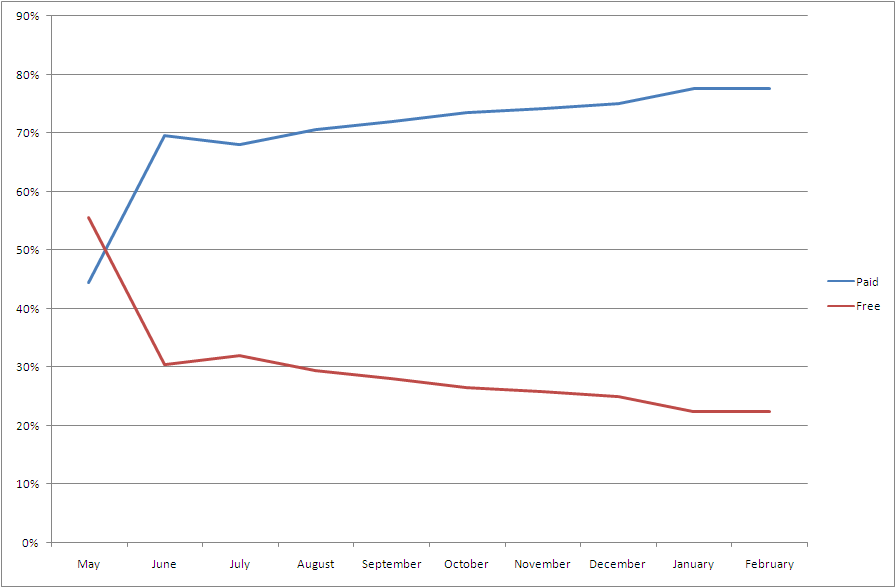

There’s an App For That
2/5/2009
You probably have seen the ads highlighting the App Store- ‘There’s an App for That.’ I’ve seen a ton of them, and one of the greatest things about them is that they aren’t lying. There really is an app for that.
There are now more than 17,000 applications available in the App Store. 17,706 to be precise. Each day, iPhone users can choose among 15 new games, 7 new utilities, 9 new entertainment applications, or 3 new productivity applications. 73 new applications appear in the App Store every day.
Want to track your finances? Mint.com. Need to lose some weight? Lose It! Like to shop for deals? WootWatch. Bored? Slotz. Like to work out? Runkeeper. Need to have dinner delivered? GrubHub. There are apps for just about everything.

Categories
Looking at the applications in the store, it is clear that the iPhone is an entertainment device. Games and Entertainment application make up more than a third of the applications in the store and typically dominate the top 100 applications in the store. In fact, Games and Entertainment make up nearly 50% of the most popular applications in the store.
Pricing
While the low price approach of the App Store has continued, I think that the new headline should be ‘99 cents is the new free.’ The downward price trend continues, but most interestingly, but the percentage of applications that are free continues to decline. In fact, soon only 1 in 5 applications in the App Store will be free.

Summary
New SmartPhones (G1, Storm, Pre, etc…) are showing up pretty regularly now. They’re still working on catching the iPhone as far as its integration and slick user experience. The fact that the App Store is continuing to grow at such a torrid pace is bad news for these competitors. Because each new application is a potential reason for a customer to choose the iPhone and each new customer is a reason for a developer to build an application for the iPhone. This virtuous circle is creating tremendous advantage for the iPhone- it’ll make it incredibly difficult to catch Apple, once again.
If you’re interested in doing some analysis yourself, here is my latest raw data (csv).